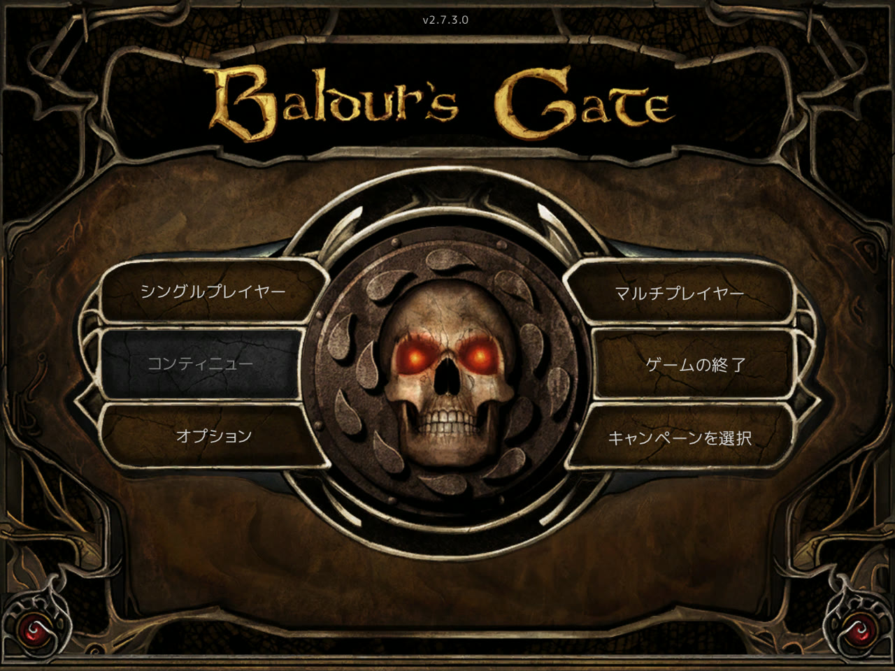

どんな MOD？
DSotSC は TeamBG の CuChoinneach らが作った MOD を、BGT・EET 向けに K4thos らが作り直したものです。クロークウッド鉱山を攻略したあと、フレンドリー・アーム・インでジェトラヤに会うと物語が始まります。ほかの地域にも新しい出来事やアイテムが加わります。
Dark Side of the Sword Coast v4.2
「Dark Side of the Sword Coast（DSotSC）」は、バルダーズ・ゲート（BG1）の舞台ソードコーストに、新しいクエスト、エリア、仲間、アイテムを加える古くからの大型 MOD です。 この配布物は、DSotSC v4.2 本体に日本語の言語ファイルを加えたものです。会話・日誌・アイテムなど、MOD のすべての文章を日本語にしています。EET（BG1 部分）用です。
DSotSC は TeamBG の CuChoinneach らが作った MOD を、BGT・EET 向けに K4thos らが作り直したものです。クロークウッド鉱山を攻略したあと、フレンドリー・アーム・インでジェトラヤに会うと物語が始まります。ほかの地域にも新しい出来事やアイテムが加わります。

DSotSC_v4.2_JP_v1.0.zip の中身を置きます（EET 日本語版を先に入れてください）。Setup-DSotSC.exe を実行し、言語は Japanese を選びます。部品は必要なものを I で入れます。setup-EET_end.exe を実行します。WeiDU の使い方と、BGEE・SoD・BG2EE・EET をまとめて日本語で遊ぶ手順は WeiDU の使い方とバルダーズ・ゲート日本語統合環境の作り方で詳しく説明しています。
DSotSC/language/japanese/ に日本語の言語ファイルを追加し、DSotSC/DSotSC.tp2 の言語の選択肢に Japanese を加えました。それ以外は元の MOD のままです。誤訳や不自然な訳に気づいたら、GitHub の Issues で教えてください。